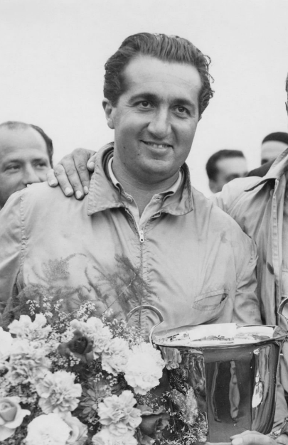

Nascido em 13 de julho de 1918, na Itália, foi o primeiro piloto a conquistar dois campeonatos mundiais consecutivos, em 1952 e 1953. Ele é conhecido por sua velocidade impressionante e por sua habilidade de dominar as corridas. Ascari morreu tragicamente em um acidente de carro em 1955, mas seu legado na F1 perdura.